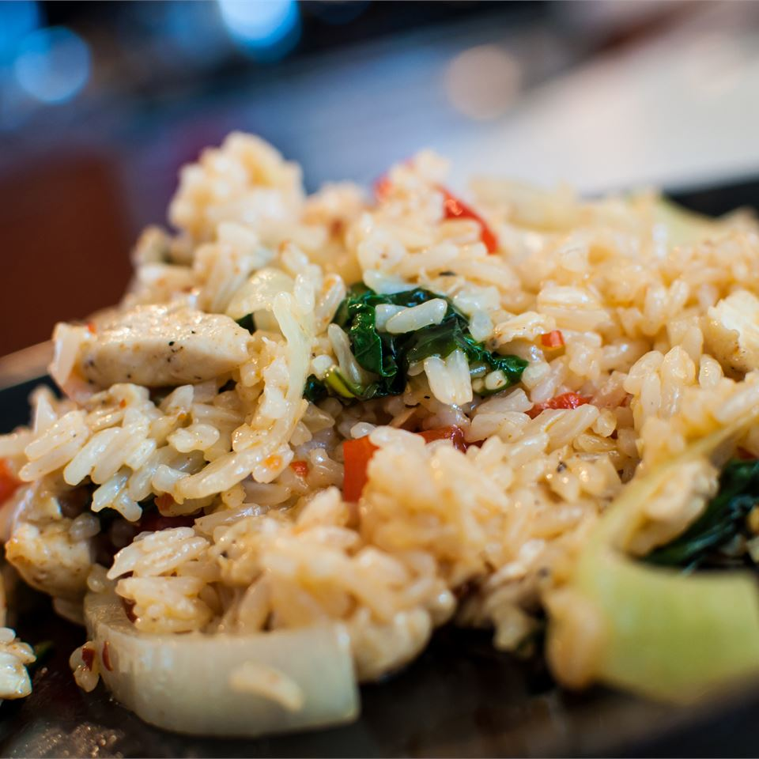

Thai Spicy Basil Chicken Fried Rice

Description
This is a staple of Thai cooking. Adjust the spices to your own tastes for a really great use for leftover rice!! I get the basil from a local Asian market. It has a different flavor than that of regular basil and makes all the difference in this recipe. It is fast and fairly easy to make, but requires constant stirring.
Ingredients
- 3 tablespoons oyster sauce
- 2 tablespoons fish sauce
- 1 teaspoon white sugar
- ½ cup peanut oil for frying
- 4 cups cooked jasmine rice, chilled
- 6 large cloves garlic clove, crushed
- 2 serrano peppers, crushed
- 1 pound boneless, skinless chicken breast, cut into thin strips
- 1 red pepper, seeded and thinly sliced
- 1 onion, thinly sliced
- 2 cups sweet Thai basil
- 1 cucumber, sliced (Optional)
- ½ cup cilantro sprigs (Optional)
Steps
-
Step 1
Whisk together the oyster sauce, fish sauce, and sugar in a bowl./li>
-
Step 2
Heat the oil in a wok over medium-high heat until the oil begins to smoke. Add the garlic and serrano peppers, stirring quickly. Stir in the chicken, bell pepper, onion and oyster sauce mixture; cook until the chicken is no longer pink. Raise heat to high and stir in the chilled rice; stir quickly until the sauce is blended with the rice. Use the back of a spoon to break up any rice sticking together.
-
Step 3
Remove from heat and mix in the basil leaves. Garnish with sliced cucumber and cilantro as desired.